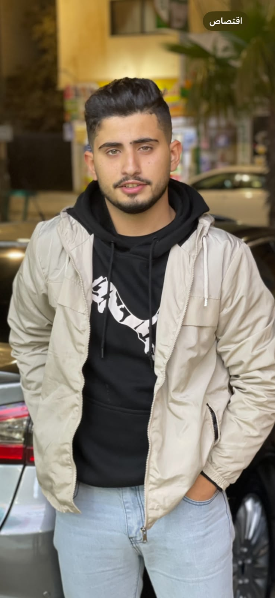

CYBERSECURITY PORTFOLIO / 2026
Tareq Ahmad
Shatnawi.
Cybersecurity Student Fourth Year
A cybersecurity student at Jordan University of Science and Technology, driven by curiosity, continuous learning, and a commitment to protecting the digital world.

01 / THE INTRODUCTION
About Me.
Learning today. Securing tomorrow.
My name is Tareq Ahmad Shatnawi, and I am a fourth-year Cybersecurity student at Jordan University of Science and Technology.
I am interested in understanding how technology works, identifying security weaknesses, and learning how to build safer digital environments.
I believe that strong technical knowledge, critical thinking, and dedication are essential to becoming a successful cybersecurity professional.
Personal Details
02 / PERSONAL STRENGTHS
Beyond Technical Skills.
Technology is only part of the equation. Effective cybersecurity also requires the ability to think, communicate, and collaborate.
Analytical Thinking
Examining complex situations carefully and making informed decisions.
Problem Solving
Finding practical solutions through structured and logical thinking.
Teamwork
Collaborating with others to achieve shared goals and overcome challenges.
Communication
Explaining ideas clearly and listening to different perspectives.
Adaptability
Learning new technologies and adapting to changing environments.
03 / TECHNICAL INTERESTS
Tools & Technologies.
Some of the programming languages and security tools that interest me as I develop my skills in cybersecurity.
| # | Technology | Category | Official Website |
|---|---|---|---|
| 01 | Python | Programming Language | python.org ↗ |
| 02 | C++ | Programming Language | isocpp.org ↗ |
| 03 | Wireshark | Network Analysis | wireshark.org ↗ |
| 04 | Nmap | Network Security | nmap.org ↗ |
| 05 | Kali Linux | Security Operating System | kali.org ↗ |
| 06 | Burp Suite | Web Security Testing | portswigger.net ↗ |
04 / LOOKING AHEAD
Where Do I See Myself in 4 Years?
In four years, I see myself working as a cybersecurity professional with strong practical experience in penetration testing and digital forensics. I hope to contribute to protecting organizations from cyber threats and improving their security. I plan to continue developing my technical abilities through professional certifications and hands-on projects. I would also like to explore cloud security and modern security technologies as the industry continues to evolve. My long-term goal is to become a trusted security specialist who makes a meaningful contribution to the cybersecurity field.
— Tareq Ahmad ShatnawiLET'S CONNECT
Have something in mind?
I am always interested in learning, connecting, and exploring new opportunities.